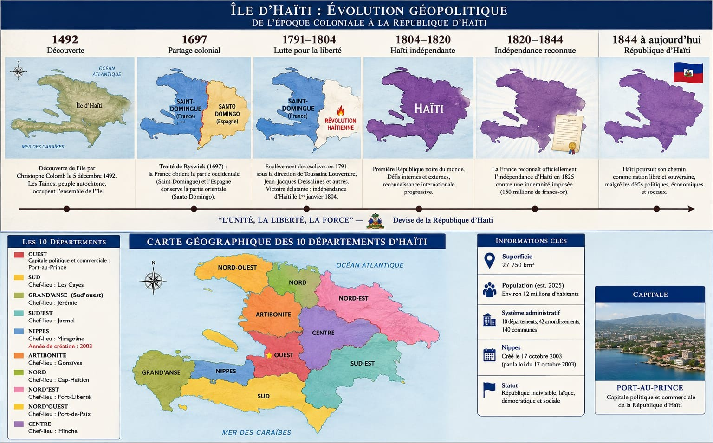
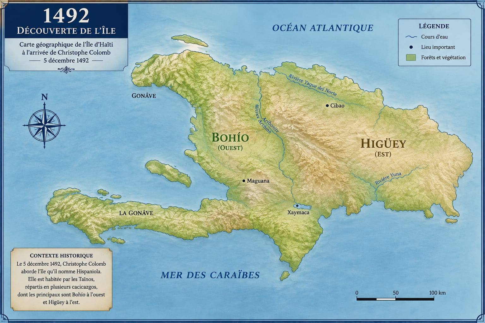
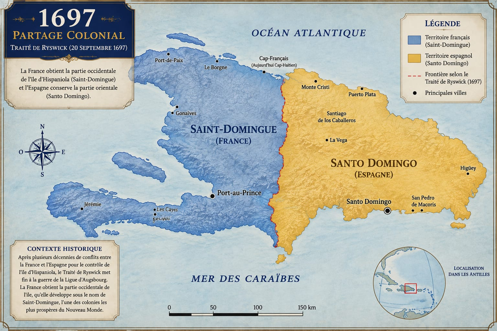
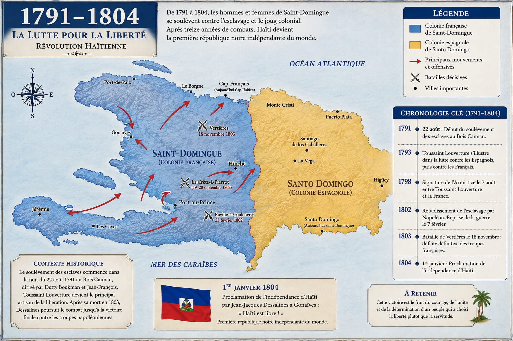
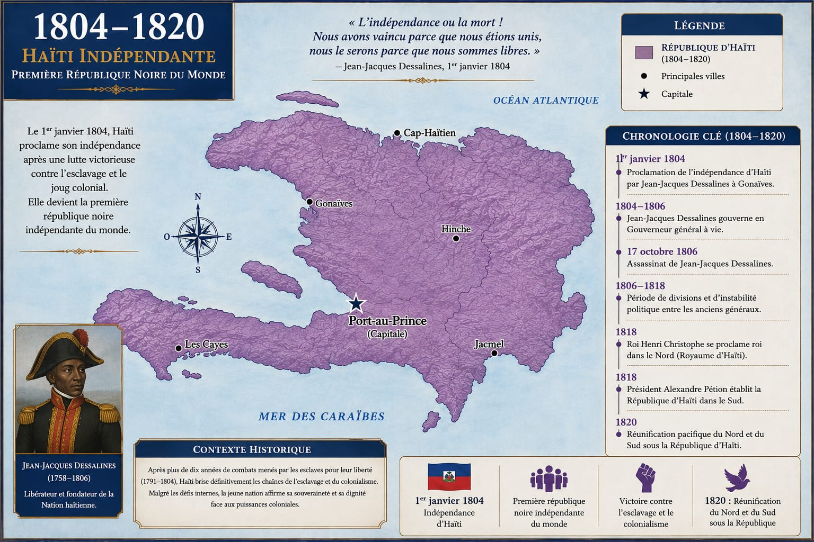
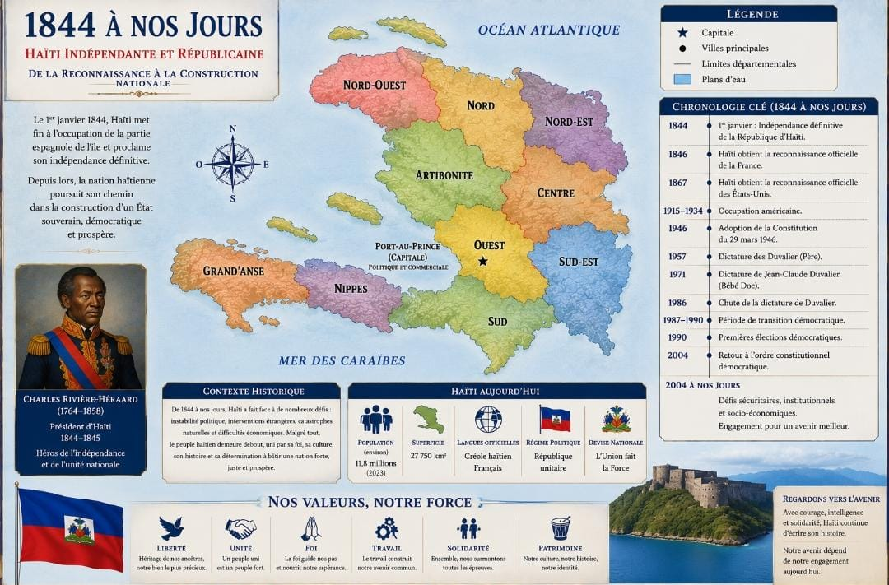

Avant de renforcer les institutions d'un pays, il faut comprendre le pays lui-même — son histoire, ses gens, ses richesses, ses défis. C'est le sens de cette série : présenter Haïti telle qu'elle est, avec sa profondeur historique et son potentiel réel.
Haïti occupe le tiers occidental de l'île d'Hispaniola, qu'elle partage avec la République dominicaine à l'est. Le pays est structuré depuis 2003 en dix départements : Ouest, Sud-Est, Nord, Nord-Est, Artibonite, Centre, Sud, Grand'Anse, Nord-Ouest et Nippes — chacun avec ses arrondissements et ses communes.

Peu de nations portent une histoire fondatrice aussi singulière. Comprendre cette trajectoire — avant, pendant et après l'indépendance — éclaire à la fois la fierté nationale haïtienne et les racines de certains défis institutionnels actuels.
Avant l'arrivée des Européens, l'île est habitée par les Taïnos, qui la nomment Ayiti — « terre montagneuse ». Christophe Colomb y accoste en 1492 ; l'île devient espagnole, puis se divise progressivement, la partie occidentale passant sous contrôle français (officialisé par le traité de Ryswick, 1697) pour devenir la colonie de Saint-Domingue.
Au XVIIIe siècle, Saint-Domingue devient la colonie la plus riche du monde — surnommée la « Perle des Antilles » — grâce au sucre, au café, à l'indigo et au coton. Cette prospérité repose entièrement sur le travail forcé de centaines de milliers de personnes réduites en esclavage, dans des conditions d'une violence extrême.


En août 1791, un soulèvement d'ampleur s'organise dans le nord de la colonie. Toussaint Louverture émerge comme figure centrale, avant d'être capturé et de mourir en captivité en France (1803). Jean-Jacques Dessalines prend alors la tête de la lutte et inflige, le 18 novembre 1803, une défaite décisive aux forces françaises à la bataille de Vertières, près du Cap — aujourd'hui dans le département du Nord.

À Gonaïves, Dessalines proclame l'indépendance et redonne au pays son nom taïno, Haïti. C'est la première République noire de l'Histoire, née de la seule révolte d'esclaves ayant abouti à la création d'un État souverain — un événement dont la portée symbolique dépasse largement les frontières du pays.


Cette dernière période reste en évolution rapide — le contenu de cette section devra être révisé et actualisé avant toute publication finale.
Les Haïtiens eux-mêmes parlent souvent de la diaspora comme d'un « onzième département ». Elle est à la fois le résultat d'un exode difficile et l'une des forces vives du pays.
Les vagues de départ se sont succédé pour des raisons différentes : exil politique sous les Duvalier, traversées maritimes périlleuses des années 1970 à 1990 (les « boat people »), départs massifs après le séisme de 2010, puis migration économique vers le Chili et le Brésil dans les années 2010, et plus récemment tentatives de rejoindre les États-Unis par voie terrestre à travers l'Amérique latine.
Les principales terres d'accueil restent les États-Unis (notamment en Floride, à New York et dans le Massachusetts), le Canada (surtout le Québec), la République dominicaine voisine, la France, ainsi que le Chili et le Brésil plus récemment.
Traversées maritimes mortelles, interceptions et détentions (y compris à Guantánamo dans les années 1990), expulsions massives depuis la République dominicaine, discrimination et précarité administrative dans plusieurs pays d'accueil, séparations familiales prolongées. Cette histoire mérite d'être racontée avec exactitude et dignité — sans sensationnalisme, et avec les sources appropriées, dans une version future de cette page.
Transferts financiers vitaux pour des centaines de milliers de familles, réseaux professionnels et philanthropiques, transmission culturelle, et un vivier de compétences que d'anciens exilés et leurs enfants peuvent remettre au service d'Haïti — une dynamique que CAPRI considère comme une ressource institutionnelle à part entière.
Au-delà des difficultés largement documentées, Haïti dispose d'atouts concrets, souvent sous-exploités faute de capacités institutionnelles suffisantes pour les structurer.
Plaines fertiles (l'Artibonite, « grenier » rizicole du pays), café et cacao haïtiens de plus en plus recherchés sur les marchés spécialisés, mangue francisque exportée vers les États-Unis, vétiver — Haïti figurant parmi les tout premiers producteurs mondiaux d'huile essentielle de vétiver.
La Citadelle Laferrière et le Palais Sans-Souci (patrimoine mondial de l'UNESCO), les plages du Sud et de l'Île-à-Vache, le patrimoine artistique et carnavalesque de Jacmel, l'architecture historique du Cap-Haïtien.
Un ensoleillement propice au solaire, un potentiel éolien encore largement inexploité — des leviers concrets face à la fragilité du réseau électrique national.
Un secteur de la confection déjà actif (notamment le Parc industriel de Caracol, Nord-Est), une proximité géographique avec le marché américain et des régimes commerciaux préférentiels existants.
Une population jeune, une diaspora qualifiée et mobilisable, un potentiel réel de transfert de compétences vers les institutions et entreprises haïtiennes.
Une scène musicale influente (konpa, musique racine et scène contemporaine), un mouvement pictural haïtien reconnu internationalement, une littérature d'auteurs haïtiens largement primée et traduite.
C'est précisément à l'articulation entre ce potentiel réel et ces défis institutionnels que se situe la mission de CAPRI.
L'écart entre le potentiel démontré d'Haïti et ses résultats concrets est, pour une large part, un écart institutionnel. Renforcer durablement les capacités des institutions publiques haïtiennes — centrales, autonomes et territoriales — c'est donner à ce potentiel les moyens de se réaliser. C'est la raison d'être de CAPRI.
Découvrir la mission de CAPRI →Cette série s'enrichira progressivement. Le département du Nord ouvre la marche ; les neuf autres suivront.